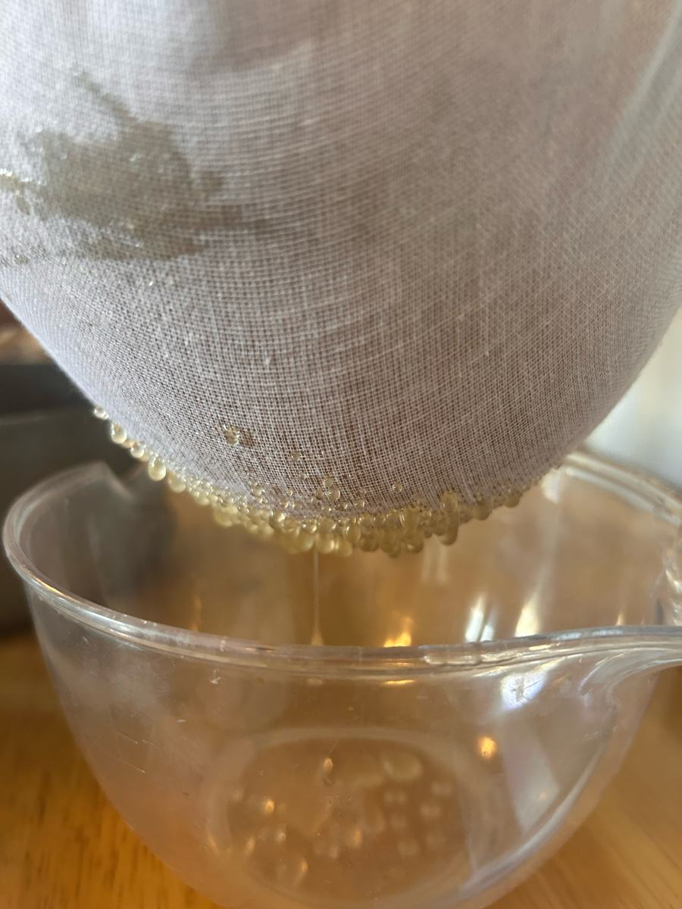
This jar holds honey from one pilot harvest, taken on the fifth of October 2026 from our hives in Kilconnell and Woodlawn, in the old country of Uí Mhaine, east Galway.
It is also the first harvest these bees have ever given. The colony began as a nucleus colony, a small founding family of bees with their queen, from Steve Witson, a registered honeybee breeder and nuc supplier in Oughterard, Co. Galway, and grew through the summer into the hives that made this honey.
From Oughterard, in old Iar Connacht, the colony now forages around Kilconnell and Woodlawn, in the heart of the old kingdom of Uí Mhaine (Hy Many). Explore Uí Mhaine →
Between ourselves: the most sophisticated piece of kit in this harvest was a stepladder, steadied by a copy of Ulysses and the Book of Uí Mhaine. Joyce and the old annals of Hy Many, holding up the honey. Go raibh maith agaibh.
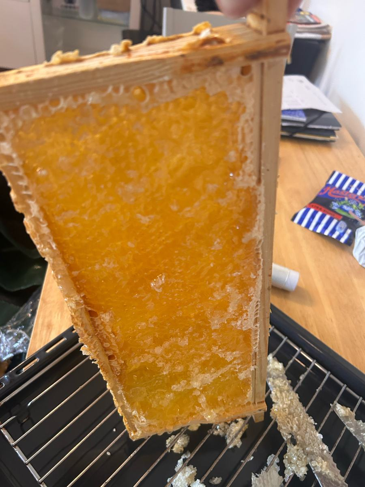
Only frames the bees had fully sealed with wax were taken, the sign that the honey is ripe.
The thin wax seal is lifted from each face of the comb by hand, opening the cells without disturbing the comb beneath.
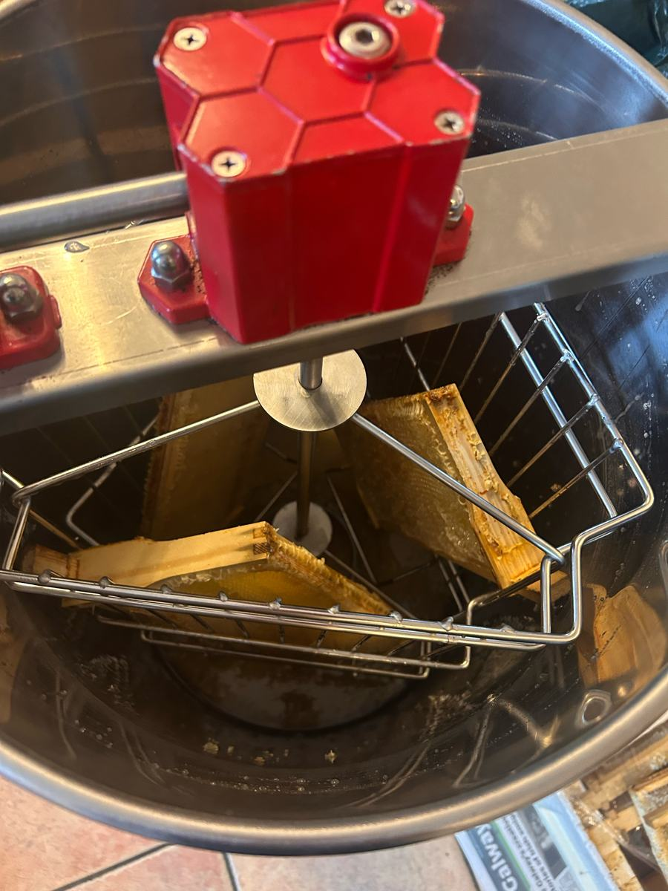
The frames are turned in a hand extractor. Spun out, not pressed, the honey leaves the comb gently.
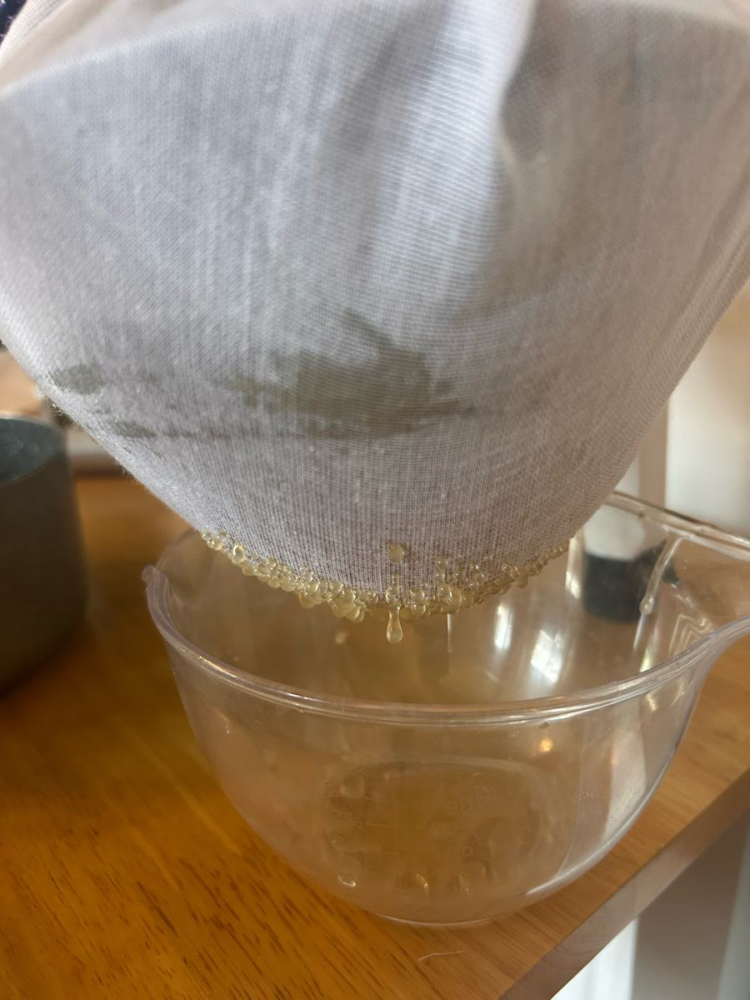
The first honey to run from the gate is light and crystal clear, the colour of late Galway sun.
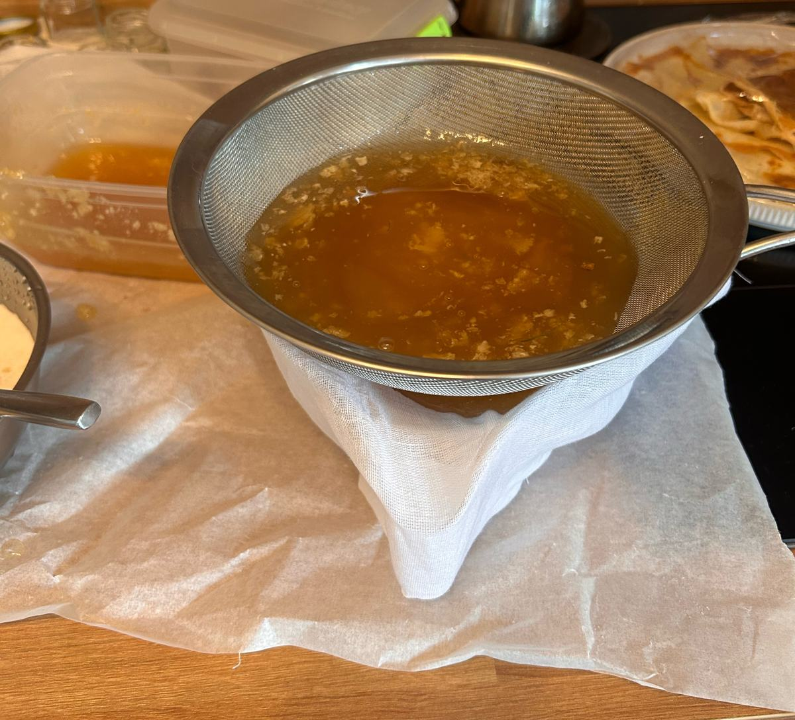
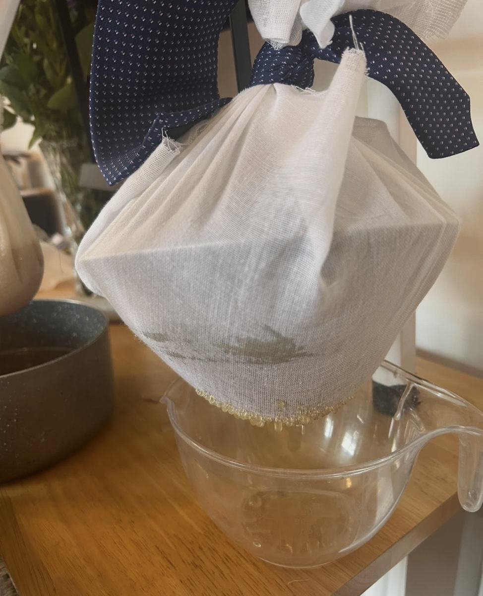
A coarse sieve first, then two layers of muslin. Enough to take out wax and the odd wandering bee; never fine enough to strip the pollen. The muslin was tied up with whatever was to hand; on the day, a navy tie.
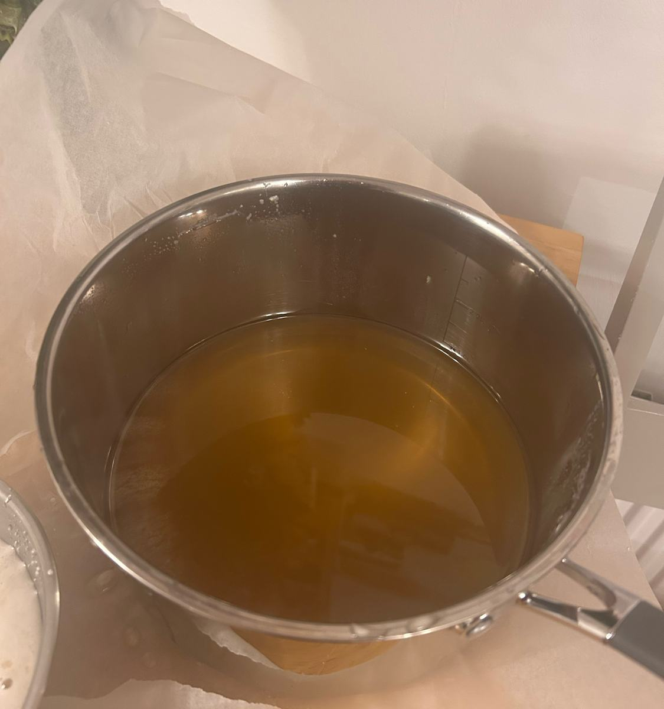
The honey rests so air rises to the top, and the fine foam is skimmed away by hand.
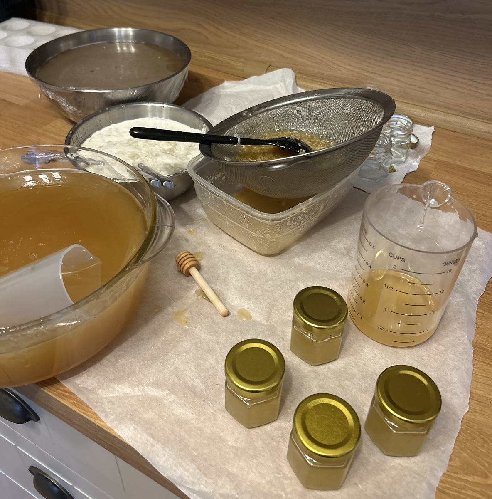
Into clean glass, sealed, and labelled with this batch.
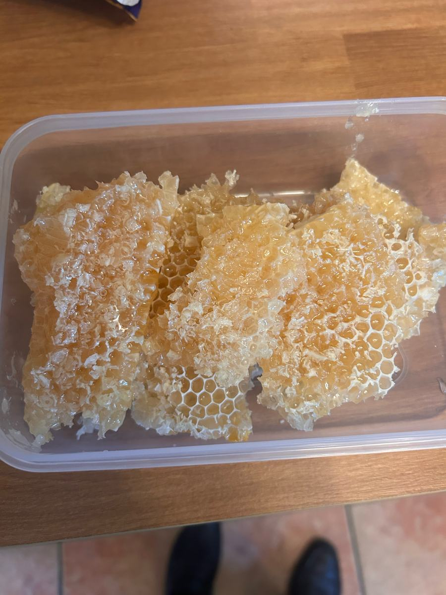
Nothing wasted. The cappings are drained and kept, clean beeswax from the same hives.
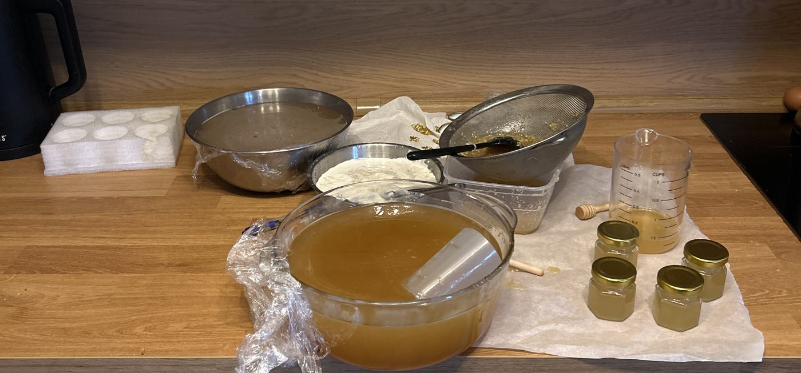
The whole batch was worked on a clean kitchen counter, on fresh baking paper, with clean equipment.
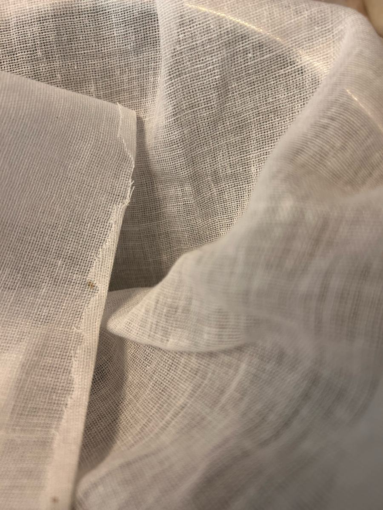
The muslin cloths were kindly donated by Lydia, a fellow ATU lecturer from the university's hotel and hospitality school: three hygienic cloths, and every drop of this batch passed through them. Go raibh maith agat, Lydia.
The first drip was strained through muslin tied up with a necktie and hung from a stepladder, the ladder propped up by Joyce's Ulysses and the Book of Uí Mhaine. Irish literature and the old annals of Hy Many, holding up the honey.
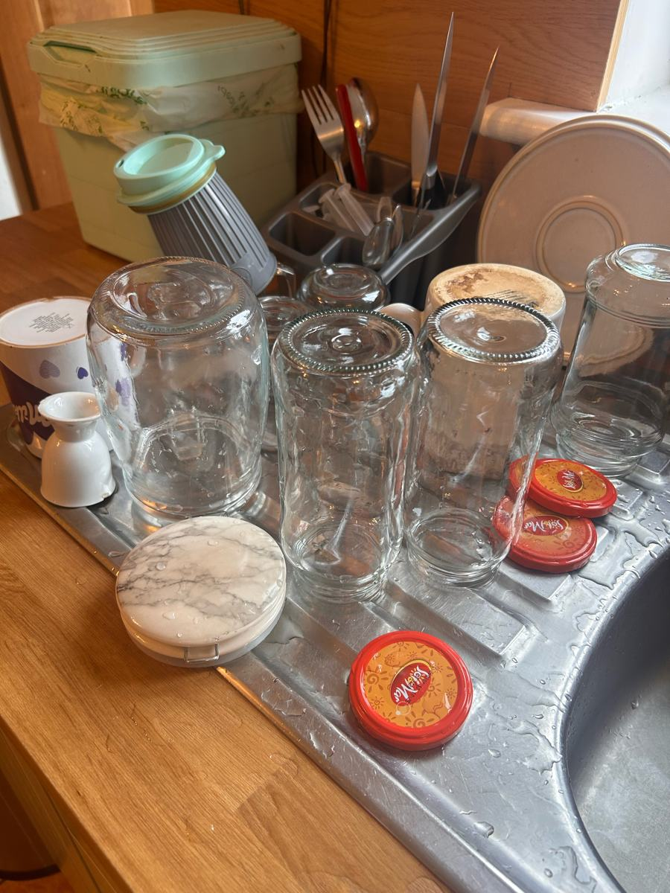
The two jars above came from the same pot. Spun honey can set naturally over time, turning pale and creamy. That is crystallisation, and it is a sign of raw, unheated honey. To bring it back, stand the jar in warm (not hot) water.
royalirishhoney.com